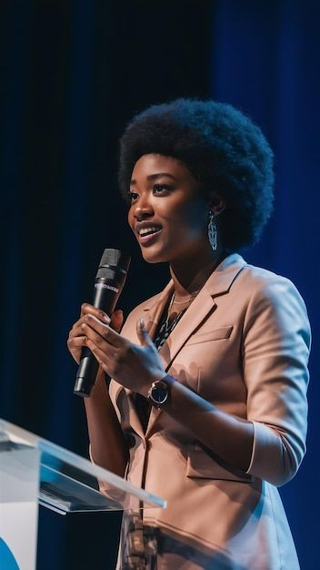

History
TechCon started in 2010 as a small local meetup for tech enthusiasts.
At first, there were only 50 attendees, but over the years it has grown into a global event.
Today, thousands of developers, designers, and entrepreneurs attend TechCon every year to learn about AI, cloud computing, and cybersecurity.
It has become a place where innovation is celebrated and connections are made.
Mission
The mission of TechCon is to bring people together to share knowledge and inspire creativity.
We want to empower the next generation of tech leaders by providing a platform for open collaboration and new ideas.
Our goal is to make technology accessible, inclusive, and a force for positive change.
Past Speakers
Over the years, TechCon has hosted some of the brightest minds in the tech
industry. Here are a few notable speakers:
Dr. Jane Smith

An expert in Artificial Intelligence who gave a keynote about the future of ethical AI.
Dr. Smith is a pioneer in artificial intelligence and the author of
several books on machine learning. At TechCon 2022, she delivered a
keynote on ethical AI and the future of automation
Alex Johnson

- A cybersecurity specialist who taught how to build secure systems and protect data.
Alex is a leading cybersecurity expert and founder of SecureNet Labs.
His talk in 2023 focused on protecting user data and building resilient
systems against modern cyber threats.
Liam Chen
A robotics innovator who demonstrated how automation can help solve real-world problems.